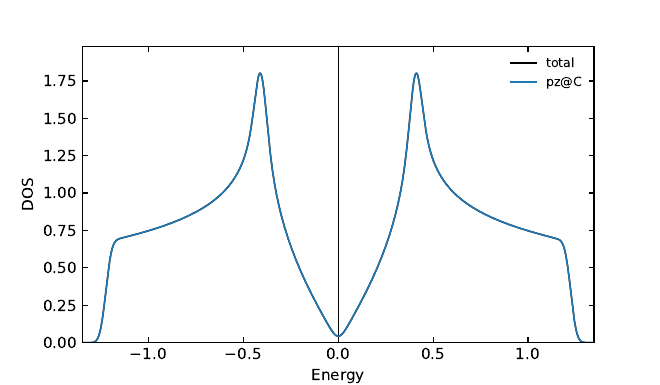
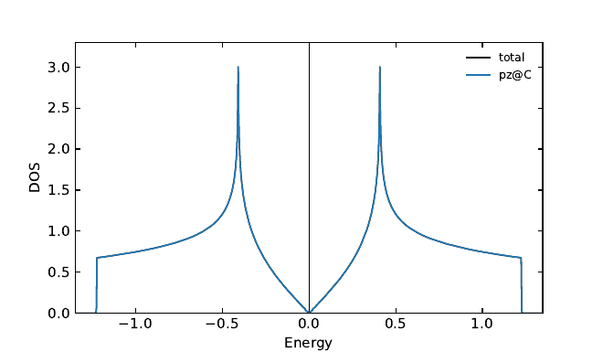
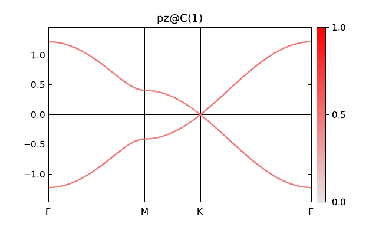
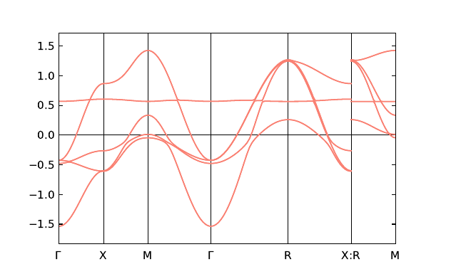
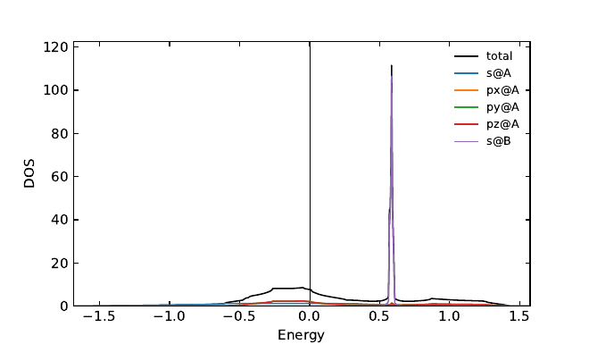
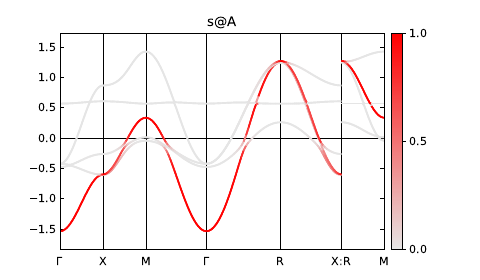
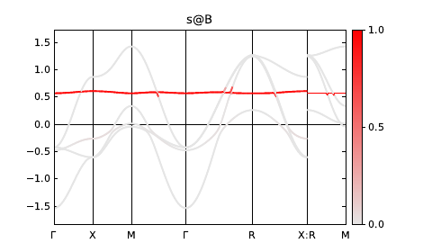

Post-processing tools#
After a tight-binding model is built (by SAMBs, or from Wannier90 seedname_hr.dat), mp_analyze computes physical quantities from its eigenvalues and eigenvectors.
This page explains the tools, set in output of the control file:
tool |
keys in |
output files (in |
|---|---|---|
|
|
|
|
(used for all output) |
|
|
|
|
|
|
|
|
(written by the callbacks) |
All of them are off by default, and the dispersion (_dispersion.txt, .pdf, .eps, plot_band.gnu) is computed as before.
Example: graphene#
The files are in docs/src/examples: the model input graphene_in.py (see Getting Started), the control file graphene_post_ctrl.py, and the callbacks graphene_callback.py.
# graphene_post_ctrl.py
graphene_post_ctrl = {
"samb": {
"model": "graphene",
"parameter": {
"z2": 1.0,
},
},
"grid": (120, 120, 1), # k grid for DOS, Fermi energy, and callback_k_full (2D: N3 = 1).
"output": {
"dos": "auto", # partial DOS for each site cluster and orbital.
"n_electron": 1, # half filling (spinless: one state per band, two bands).
"save_k_path": True, # save Ek, Uk along k path in .npz.
"callback_k_path": "graphene_callback.py",
"callback_k_full": "graphene_callback.py",
"dispersion": {
"k_path": "Γ-M-K-Γ",
"k_point": {"Γ": "[0,0,0]", "K": "[1/3,1/3,0]", "M": "[1/2,0,0]"},
"weight": [["pz@C(1)"]], # fat band of pz at C(1).
},
},
}
Put the three files in one directory, and run
$ mp_create graphene_in.py
$ mp_analyze -v graphene_post_ctrl.py
Then graphene/output/ contains, in addition to the dispersion,
graphene_dos.txt,graphene_dos.pdf,graphene_dos.eps,plot_dos.gnu: DOS.graphene_weight.txt,graphene_weight.pdf,plot_weight.gnu: orbital weight ofpz@C(1).graphene_eigen_k_path.npz: eigenvalues and eigenvectors along the k path.my_band.txt,my_occupation.txt: written by the callbacks.
The Fermi energy is 0 for "n_electron": 1 (half filling of the two bands), and -v prints fermi energy = 0.0 for n_electron = 1 (gaussian).
Density of states#
When output/dos is not False, the density of states (DOS) per primitive cell is computed on the k grid given by grid (the Γ point only for a model of a point group).
"auto"(orTrue): the partial DOS for each site cluster and orbital, with the spin summed, e.g.,s@Afor(s,u)@A(1),(s,d)@A(1),(s,u)@A(2), … With"dos_spin": True, the spin of a spinful basis is resolved, e.g.,(s,u)@Aand(s,d)@A.[[ket name]]: for each list of ket names, the sum of the partial DOS of the kets, e.g.,[["pz@C(1)"], ["pz@C(1)", "pz@C(2)"]], labeled by the ket names joined by+. The ket names are those of the basis ininfo/model_name_hr.dat(orinfo/model_name_info_wannier.pyin wannier mode).
model_name_dos.txt has the columns: the energy measured from the Fermi energy (as in the dispersion), the total DOS, the integrated total DOS N(E), and the partial DOS. The comment lines at the top give the content of each column, e.g., for graphene,
# DOS per primitive cell (summed over spin).
# shifted by fermi energy = 0.0
# number of k points = 14400 (grid = [120, 120, 1])
# Gaussian width = 0.02449489742783178
# column 1: E
# column 2: total
# column 3: N(E), integrated total DOS
# column 4: pz@C = pz@C(1) + pz@C(2)
The DOS is normalized so that the total DOS integrates to the number of bands. The energy range includes all the eigenvalues, with dos_e_num points (1000 by default).
The method is chosen by dos_method:
"gaussian"(default): the delta functions are broadened by a Gaussian with the standard deviationdos_width(1% of the band width ifNone, and not smaller than the energy step). A width smaller than the energy step is an error; increasedos_e_numin that case (dos_e_nummust be at least 12)."tetrahedron": the optimized tetrahedron method by libtetrabz, which is installed separately (see Installation). N(E) is computed by the tetrahedron method, and the DOS is its difference over each energy step, \((N(E+dE/2)-N(E-dE/2))/dE\), so that the normalization is kept also for flat bands. It gives a sharp DOS without broadening (dos_widthis not used), but cannot be used for a model of a point group. It is slower and uses more memory than"gaussian"; use a moderategridanddos_e_numfor a large model.
DOS of graphene with "gaussian" (left) and "tetrahedron" (right). The tetrahedron method resolves the van Hove singularities and the band edges sharply:




Fermi energy#
The Fermi energy is 0 in samb mode, and that of seedname.win in wannier and symcw modes. When output/n_electron is given, the Fermi energy is determined from the eigenvalues on the full k grid so that n_electron states per primitive cell are occupied, and it is used for all the output (dispersion, DOS, orbital weight, saved eigen systems, and the values passed to the callbacks).
Each band holds one state, so that n_electron is the number of electrons for a spinful model, and half of it for a spinless model, e.g., "n_electron": 1 for graphene at half filling.
With "dos_method": "gaussian", the states are occupied in ascending order of energy (T = 0), and the Fermi energy is placed at the middle of the highest occupied and the lowest unoccupied states. With "tetrahedron", it is computed by libtetrabz. For an insulator (integer n_electron with a gap), both methods place the Fermi energy at the middle of the gap.
Orbital weight (fat band)#
When output/dispersion/weight is given in the same way as output/dos ("auto" or [[ket name]]), the weight of the kets in each eigenvector, the sum of \(|U_k[m,n]|^2\) over the kets \(m\), is computed along the k path.
model_name_weight.txt has the columns: k, the energy measured from the Fermi energy (as in the dispersion), and the weights. The bands are plotted with the color of the weight, one page for each weight, in _weight.pdf and by plot_weight.gnu.
"auto" always sums over the spin (dos_spin is not used); give [[ket name]] for spin-resolved weights, e.g., [["(pz,u)@C(1)", "(pz,u)@C(2)"]].
For graphene, the weight of pz@C(1) is 1/2 on every band, by the symmetry between the two sublattices:


Example with several orbitals#
For a model with several orbitals, the partial DOS and the orbital weights show the character of the bands. The following is a spinful model with s and p orbitals at A and an s orbital at B (CsCl type, space group 221, SAMBs of the identity irrep. with arbitrary parameters), computed with "dos": "auto", "dos_method": "tetrahedron", "n_electron": 4, and "weight": "auto".
Dispersion and DOS (the sharp peak is the narrow band of s at B):




Orbital weights of s@A and s@B (two of the five pages of _weight.pdf):




Eigenvalues and eigenvectors#
With "save_k_path": True and/or "save_k_full": True, the eigenvalues and eigenvectors along the k path and/or on the full k grid are saved in model_name_eigen_k_path.npz and model_name_eigen_k_full.npz. They contain
Ek[k, n],Uk[k, :, n],k_grid,ket,fermi_energy: as described for the callbacks below,k_linear(along the k path) orgrid(on the full k grid).
They can be read by numpy.load, e.g., to analyze the eigenvectors in Jupyter:
import numpy as np
z = np.load("graphene/output/graphene_eigen_k_path.npz")
Ek, Uk, ket = z["Ek"], z["Uk"], list(z["ket"])
weight = np.abs(Uk[:, ket.index("pz@C(1)"), :]) ** 2 # weight[k, n] of pz@C(1).
As for the callbacks, save_k_path requires the dispersion (output/dispersion/k_path is not None, and the model is of a space group), and save_k_full keeps all the eigenvectors on the full grid in memory.
Callbacks for custom calculations#
Quantities not provided by MultiPie can be computed by user-defined functions, which receive the eigenvalues and eigenvectors of H(k).
Give a Python file, relative to the top directory (where the control file is), in output/callback_k_path and/or output/callback_k_full, and define the function of the same name in the file. One file can define both, and it is loaded once.
The example graphene_callback.py writes the band energies along the k path, and the occupation of each ket at \(T = 0\), \(n_m = (1/N_k) \sum_{k,n} \theta(E_F - E_{kn}) |U_k[m,n]|^2\):
"""
Example of callbacks for graphene_post_ctrl.py.
The functions receive the eigenvalues Ek[k,n], the eigenvectors Uk[k,:,n], and the info dict,
and write their results in the output directory of the model.
"""
import os
import numpy as np
# ==================================================
def output_dir(info):
# "output" is the default of output/dir; change it if output/dir is changed.
return os.path.join(info["_topdir"], info["name"], "output")
# ==================================================
def callback_k_path(Ek, Uk, info):
"""
Band energies measured from the Fermi energy along the k path, with the position along the path.
"""
data = np.column_stack([info["k_linear"], Ek - info["fermi_energy"]])
header = "k " + " ".join(f"E{n + 1}" for n in range(Ek.shape[1]))
np.savetxt(os.path.join(output_dir(info), "my_band.txt"), data, header=header)
# ==================================================
def callback_k_full(Ek, Uk, info):
"""
Occupation of each ket at T = 0, n_m = (1/Nk) sum_{k,n} theta(E_F - E_kn) |U_k[m,n]|^2.
"""
occupied = Ek < info["fermi_energy"]
n_m = np.einsum("kn,kmn->m", occupied, np.abs(Uk) ** 2) / len(Ek)
with open(os.path.join(output_dir(info), "my_occupation.txt"), "w", encoding="utf-8") as f:
for ket, n in zip(info["ket"], n_m):
print(f"{ket} {n:.6f}", file=f)
For graphene at half filling, my_occupation.txt is
pz@C(1) 0.500000
pz@C(2) 0.500000
The arguments of the callbacks are
Ek[k, n]: eigenvalues in ascending order (not shifted by the Fermi energy, and not raised tooutput/dispersion/power).Uk[k, :, n]: eigenvector ofEk[k, n], i.e.,H(k) = Uk @ diag(Ek) @ Uk^†for each k, in the order ofinfo["ket"]and in the gauge given byoutput/fourier/tb_gauge.info(dict):k_path(str),k_point(dict, label to fractional coordinates): k path and k points of the dispersion (Noneif the dispersion is not computed).k_grid(ndarray): k points ofEkandUk(fractional, in the primitive cell),[number of k, 3].ket(list): ket names.fermi_energy(float),name(str): Fermi energy, and model name (or seedname in wannier mode without model)._topdir(str),_verbose(bool): top directory (absolute path), and verbose option.for
callback_k_pathonly,k_linear(ndarray) andk_dis_pos(dict): position along the k path, and positions of the labels, as used to plot the dispersion.for
callback_k_fullonly,grid(list):[N1, N2, N3].
The functions are called after the other output, at the end of the analysis. callback_k_path requires the dispersion. For callback_k_full, all the eigenvectors on the full grid are kept in memory, N1 x N2 x N3 x (number of kets)^2 complex numbers, so that a coarse grid may be needed for a large model.
Note
Unlike the input files, the callback files are executed as Python code. Use only callback files you trust.
Plotting by gnuplot#
The plots in PDF and EPS are written by matplotlib. The gnuplot scripts write the same plots, and are convenient to adjust them:
$ cd graphene/output
$ gnuplot plot_dos.gnu # graphene_dos.pdf and .eps
$ gnuplot plot_weight.gnu # graphene_weight.pdf (one page for each weight)
The PDF/EPS files are overwritten. The plot ranges and the Fermi level are variables at the top of the scripts, e.g., in plot_dos.gnu,
Ef = 0.0 # fermi energy (data are already shifted by Ef).
Ef_line = 0.0 # position of fermi level in plot.
xmin = -1.347219358530748
xmax = 1.347219358530748
ymin = 0.0
ymax = 1.9823887755144438
and plot_weight.gnu has labels, the list of the weights to plot.